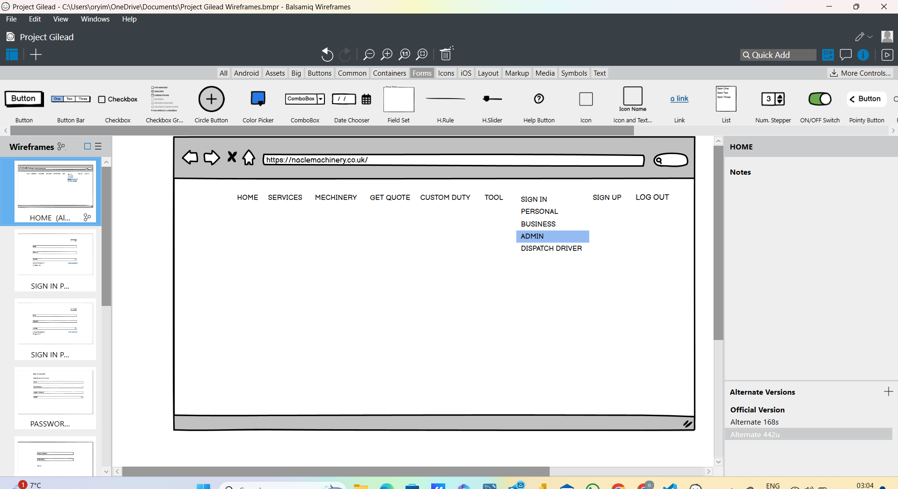
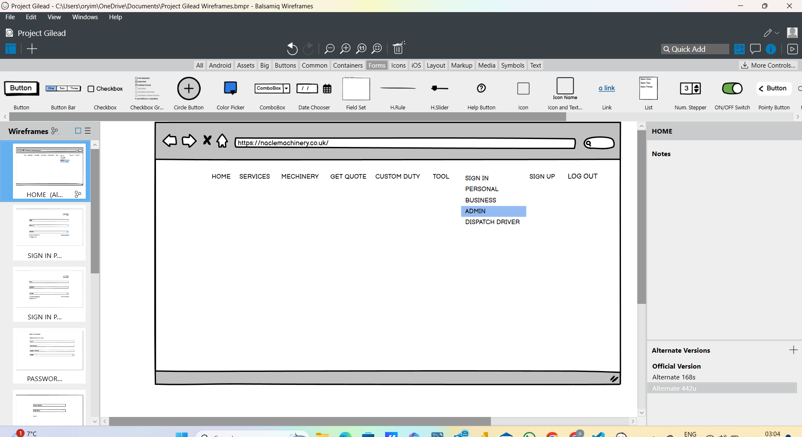

This dashboard displays some of the data analytics work i carried out during ASF outbreak.
Alot of the data has been anonymized to keep references private. This is some of the highlights of the overall project.
At the end of this project, i made presentation of findings to the international donor and other partners.
 

I designed this wireframe during one of my business analysis project.

This dashboard displays a analysis of survey carried out on different professionals in the data industry and their preferred programming language, the spread and salary they earn including other details.

I used the SQL load data infile query statement to load this into SQL server from which i was able to query the data used to create this dashboard on Power Bi.

As a Business Analyst, I created this to be process flow map using visio for one of my projects.

This dashboard was used to analyze sales by days of the week, months of the year and others.

I created this sample database that can be adopted for use.